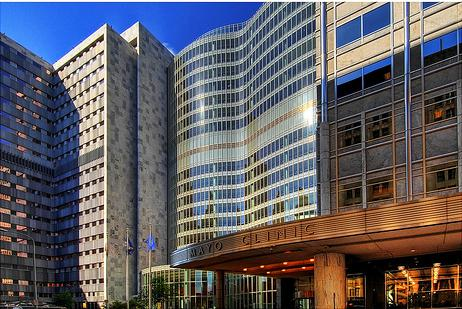
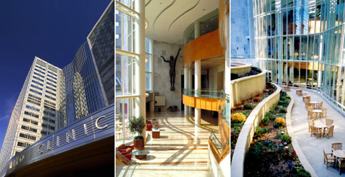
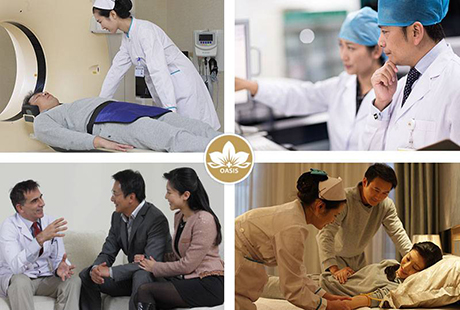
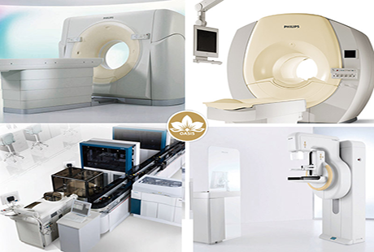
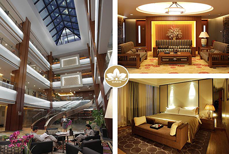
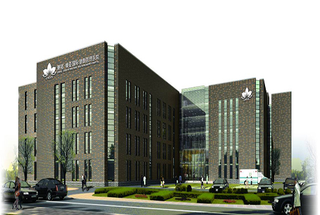

关注医疗品质的人一定都知道大名鼎鼎的美国梅奥诊所（Mayo Clinic），这里被誉为“全世界最好医院”！而它之所以声名响彻海内外，缘于它高质量的医疗服务，梅奥诊所在多项质量评价中都名列前茅，其多个科室连年排名全美第一，全部科室一直位居全美前三名！

让我们先来看看“梅奥”到底有什么好？
v “检”的“精”，才能“诊”的“准”
来到梅奥诊所的患者，首先会在放射科经历超过4 600道流程或诊断研究过程，例如X光检查、CT扫描或者是核磁共振成像（MRI），当然这些设备都是最好的，有的甚至会耗时超过24小时以上来完成体检，一切只为了能够精准的诊断病因。
v 解读检查报告其实是项技术活
在梅奥诊所，光是放射科就有大约230名医生，检查报告出来后，每位医生通常会在90分钟之内对这些影像进行解读，然后完善诊断报告，放射科医生需要具有“鹰”一般的洞察力，才能准确解读报告，他们的专业性决定着整个诊断的精准度。
v 这里有超全科的医生
梅奥诊所涵盖了几乎所有的专科领域，当然不必说，这些专科医生都是领域里面最有经验最优秀的。
v 在医学领域他们还具备创新和研究能力
梅奥诊所要求医生积极参与研究活动，而研究人员提出的创新理念和开展的最新研究首先惠及的是梅奥诊所的广大患者。
v 患者至上，预约就诊，就医环境非常好
梅奥诊所不仅拥有最好的就医环境，并且采用预约制，你很难看到一大堆人候诊，永远都是宽松、私密的就诊环境，这非常有效的保证了医疗水平与就医服务。

v 集体智慧的累积才是医疗质量的源泉
这是最重要也是最关键的一点，梅奥在为患者诊断病情时，依靠的不只是某位医生的技术和经验，还会借助健康决策树。所谓健康决策树，究其本质就是大数据，其来源是梅奥150年间积累的庞大的临床统计与实践经验。
↑对比以上几点，再结合中国目前的医疗情况，我们很容易能够得出，为什么现在的中国出不了“梅奥诊所”：
●医院就医压力大，1个医生：上百个病人，这样的就医比例，以及落后的医疗设备，造成了“三长一短“（挂号时间长，排队时间长，等候时间长，看病时间短），因此治疗的质量和服务态度根本不可能得到提升！
●重治疗，不重检查，因此误诊误断的情况屡见不鲜，导致老百姓越来越看重医生个人的能力，一窝蜂涌向名医挂号，最终一号难求，就医压力变大。
●医生个人能力得不到很好的应用，大多过度消耗在就诊服务上，而在经验的数据化累积和整个团队医疗水平的提升上，医生的精力实在是不够用了。
●公立医院环境差、功能设施落后、卫生水平不够，而私立医院的医生水平参差不齐，医疗质量得不到保障。
●就医结束后无跟踪，不管理，预防复发全靠自觉。
●......
“中国梅奥在成长”
留德医学博士的韩小红，正是因为看到了国内医疗与国外医疗的巨大差距，才致力于打造“中国梅奥”——慈铭奥亚健康管理医院

建立了“深度体检”、“私人医生服务”、“国内外就医转诊”等一体健康管理体系，并携手加利福尼亚大学洛杉矶分校（UCLA）、南加州医学院等国际著 名医院，再结合自己创立慈铭体检这十几年的健康大数据，来打造这国内真正意义上的高端医院。
1、采取预约制+围诊服务，充分利用集体智慧

每天只服务10名患者，平均每位患者有5-6名医务人员，享受医生团队围诊服务。
2、从检查开始，慈铭奥亚就秉持“深一度体检，少一度隐患”

主张利用先进的设备（X光检查、螺旋CT扫描、核磁共振成像（MRI））和有经验的医生，为患者检查身体，并采取多对一的模式与患者沟通，向患者详细解读报告，制定治疗计划。
3、私人医生+就医绿色通道
慈铭奥亚为了更好的给患者提供高水平的诊断治疗，专门让全科医生来给患者诊断，要知道能做全科医生的可都是临床经验丰富，且久经历练的老医生了，不仅医生的整体水平高，而且还开了外挂，绿色就医通道为患者打通了全国著名3甲医院以及国外著名医院就医通道。
4、5星级酒店标准的就医环境

5星级的设施与贴心温暖的服务，让看病成了一件私密、安心甚至是享受的事情。
5、全生命健康管理：
6、健康大数据支持，先进医疗理念输入慈铭奥亚健康管理医院，利用慈铭集团十几年累积的健康大数据支撑，引入细胞、功能医学、基因科技还有互联网医疗等前沿的医疗理念来为患者服务。

虽然慈铭奥亚现在只能服务一小部分患者，但是梅奥诊所发展了140年才有今天的规模和影响力，慈铭奥亚才成长了4年......所以相信未来有一天，慈铭奥亚的健康管理模式能够服务更多的中国患者，让更多的人享受到美国梅奥诊所一样的医疗服务。